Nesta aula, usaremos as ferramentas instaladas anteriormente para criar um repositório e publicar uma cópia remota no GitHub. Um repositório organiza os arquivos e o histórico de um projeto; ele também pode ser compartilhado com outras pessoas.
Antes de continuar, revise os conceitos de Git e GitHub e confira se o GitHub Desktop está instalado. A aula anterior explica como preparar o ambiente.
| Assuntos Anteriores |
|---|
| Aprendendo Sobre o Git |
| Aprendendo Sobre o GitHub |
| Preparando o Ambiente de Trabalho |
Começando com o Repositório Local¶
Vamos criar primeiro um repositório local pelo GitHub Desktop e depois publicá-lo no GitHub. Também é possível criar um repositório pela interface web ou usar comandos no terminal; aqui usaremos o GitHub Desktop e o Visual Studio Code.
- No GitHub Desktop, escolha a opção para criar um repositório. Informe um nome, selecione a pasta onde os arquivos ficarão e, se desejar, adicione uma descrição, escolha a visibilidade e inclua um arquivo README ou uma licença.
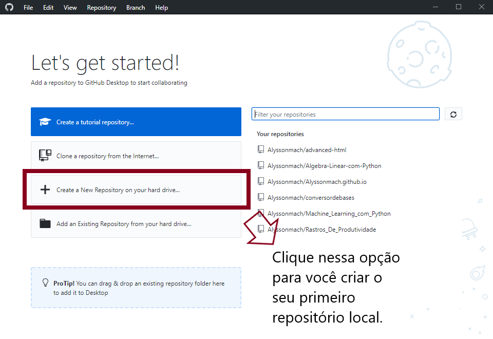
Clique em "Create a New Repository" no GitHub Desktop para criar o seu repositório local.
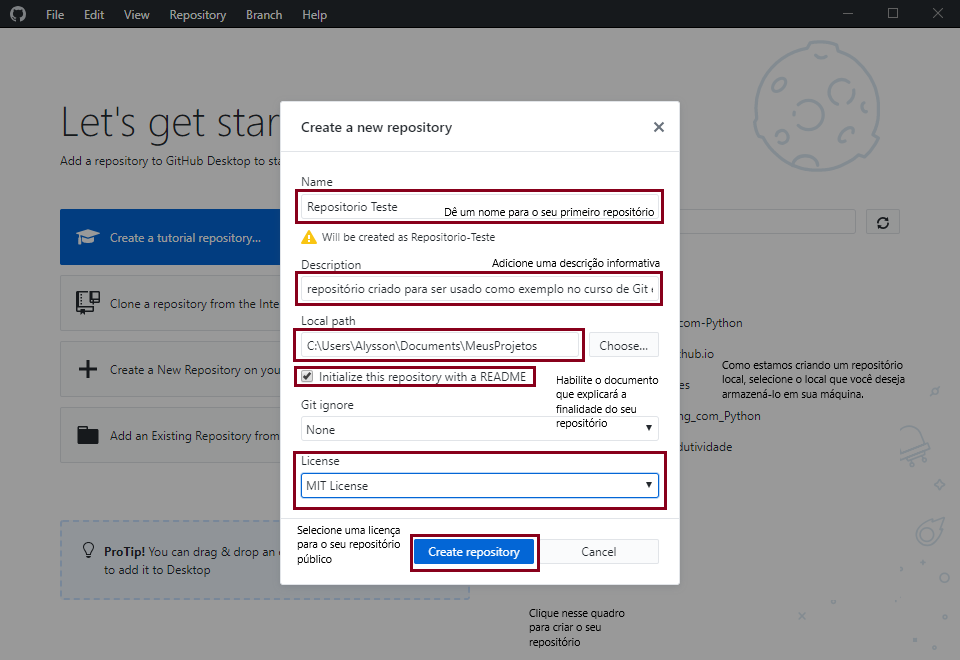
Preencha as informações para a criação do seu repositório local. Após todos os passos terem sido concluídos, clique em "Create Repository".
- O repositório local fica salvo na pasta escolhida. Você pode adicionar, editar ou remover arquivos; o GitHub Desktop mostrará essas mudanças para que você decida quais serão incluídas em um commit.
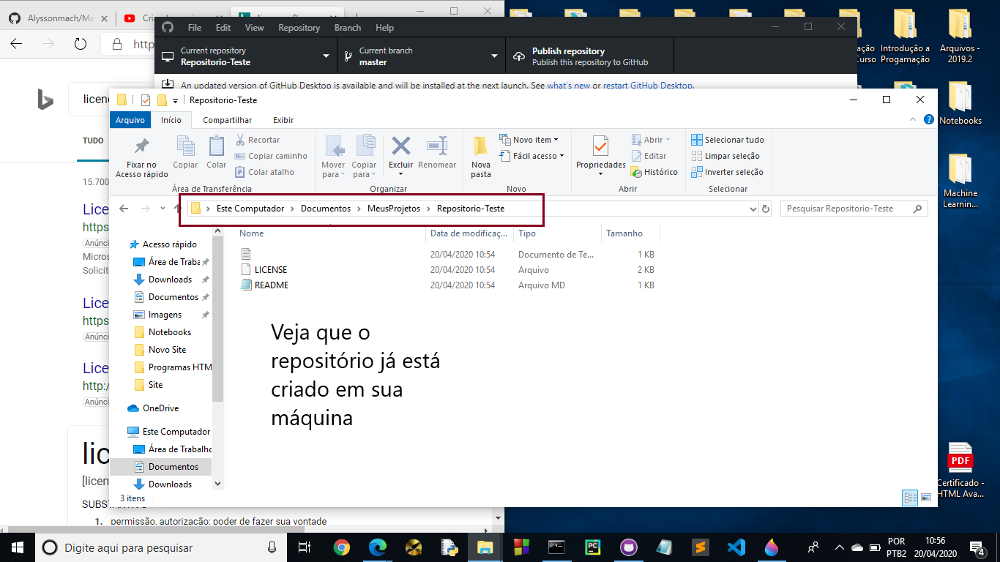
Se você selecionou essas opções, o GitHub Desktop cria os arquivos README e de licença no repositório local. Eles aparecerão no GitHub depois que você publicar o repositório. Na aula de Markdown, você aprenderá a editar o README.
- Para disponibilizar o repositório no GitHub, use a opção de publicação do GitHub Desktop. Escolha se o repositório remoto será público ou privado e confirme a publicação.
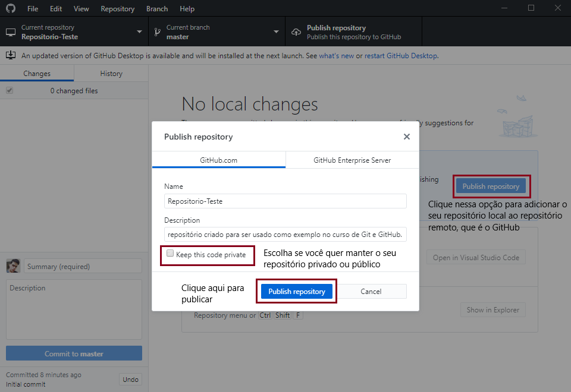
Clicando em "Publish Repository", você criará o seu repositório remoto no GitHub. Vale a pena lembrar que você deve escolher se deseja que o seu repositório seja público ou privado.
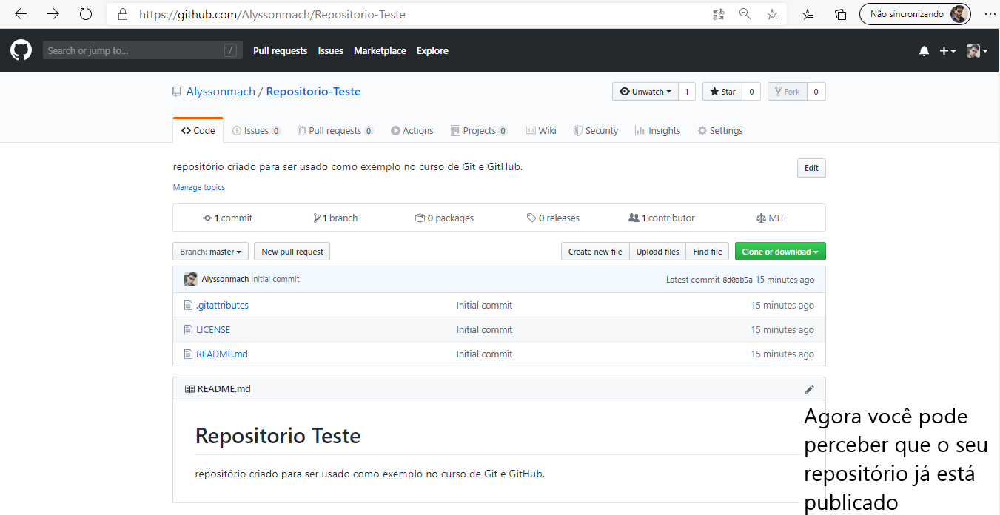
Acesse o GitHub e abra a página do repositório para conferir se a publicação foi concluída.
- Use um editor de código para adicionar ou alterar arquivos na pasta do repositório local. O GitHub Desktop pode abrir essa pasta no Visual Studio Code, se ele estiver instalado.
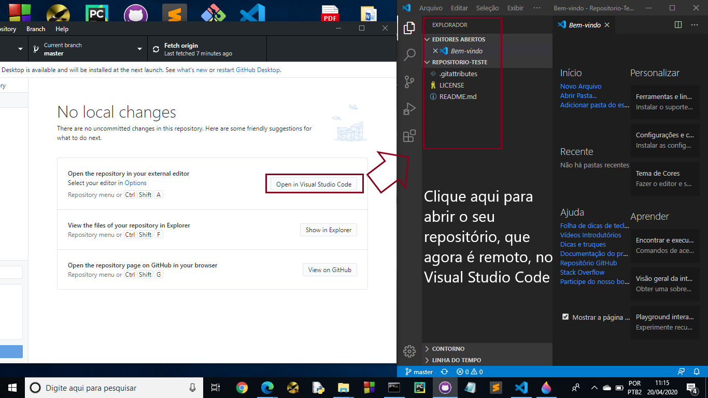
Um editor de código permite alterar os arquivos do projeto. O GitHub Desktop mostra as mudanças detectadas pelo Git para que você possa revisá-las.
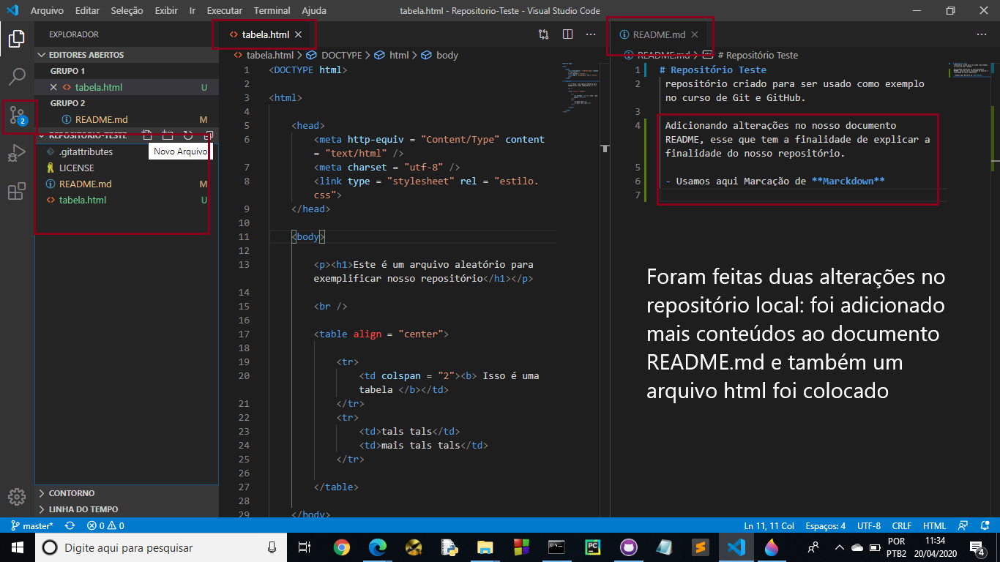
Veja pela imagem acima que foram feitas duas alterações no repositório, uma adição do arquivo tabela.html e uma alteração no documento README.md. Cada passo feito será adicionado ao repositório local pelo Git.
- Depois de editar os arquivos, volte ao GitHub Desktop e revise as mudanças. Para registrá-las, escreva uma mensagem que resuma o trabalho e crie um commit. O commit guarda um estado do projeto no histórico local.
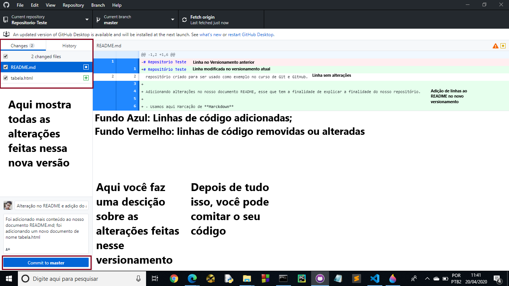
No GitHub Desktop, confira as mudanças e crie um commit com uma mensagem descritiva. O nome da branch padrão e os rótulos dos botões podem variar; a captura de tela desta aula mostra uma versão anterior da interface.
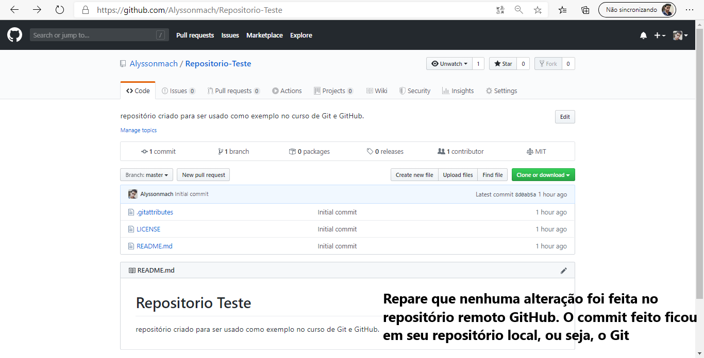
O commit fica no repositório local até você enviar as mudanças ao remoto. Assim, você pode revisar o histórico e preparar novos commits antes de publicá-los.
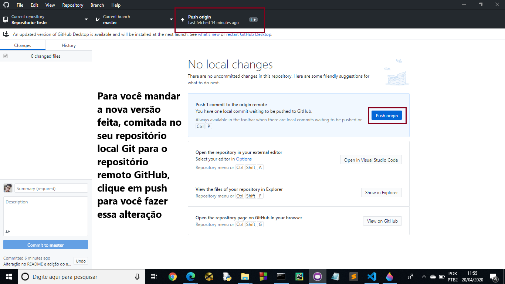
Quando estiver pronto para compartilhar os commits locais, use a opção de push no GitHub Desktop. O push envia ao repositório remoto os commits que ainda não foram publicados.
- Se você visitar o seu perfil no GitHub e olhar o repositório criado, você pode verificar que o "push" deu certo. Além diso, você também tem a possibilidade de fazer edições, remover ou adicionar arquivos pelo próprio GitHub.
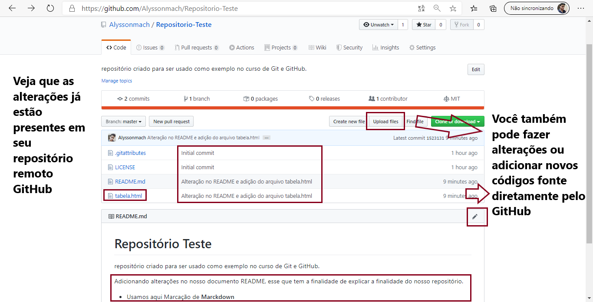
Veja que todas as alterações feitas já estão disponíveis no GitHub. Caso você deseje fazer edições, remoções ou adições de conteúdo pelo próprio GitHub, isso também é possível de ser realizado.
- Para atualizar o repositório local com mudanças remotas, use Fetch origin para buscar as referências e os objetos novos. Depois, use Pull origin para integrar as mudanças à branch atual, se necessário.
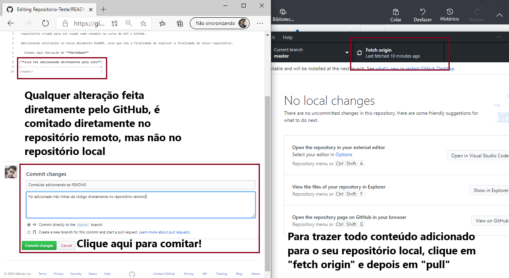
Use Fetch origin para buscar atualizações do repositório remoto. Use Pull origin quando quiser integrá-las à branch local atual. Também é possível fazer alterações diretamente no GitHub, se você tiver permissão.
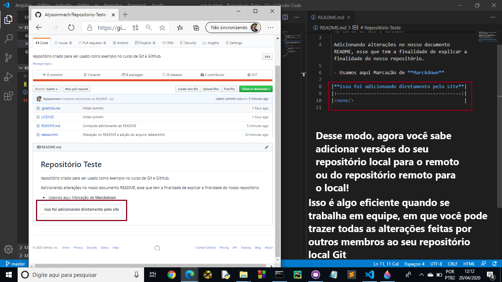
O Git transfere os dados necessários para buscar e integrar mudanças, em vez de substituir indiscriminadamente todo o projeto. Como o histórico é mantido, você também pode comparar versões e, quando apropriado, recuperar estados anteriores.
- Se outras pessoas forem trabalhar no projeto, convide-as pelas configurações de acesso do repositório. A disponibilidade dessa opção depende das permissões da sua conta e do repositório.
Clonado Repositórios Remotos Seus ou de Terceiros¶
Você também pode colaborar em projetos de outras pessoas. Um fork cria uma cópia do repositório na sua conta; a partir dela, você pode propor mudanças ao projeto original por meio de um pull request.
- Para criar uma cópia local de um repositório remoto, use a opção de clonar no GitHub Desktop e escolha o repositório e a pasta de destino.
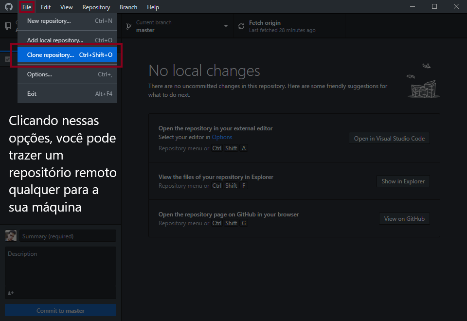
Você pode clonar um repositório remoto em sua máquina clicando em "file" e depois em "clone repository". Lembrando que dependendo do repositório que está sendo clonado, você não pode fazer alterações nele, mas pode fazer sugestões e dar continuidade ao projeto usando outros métodos.
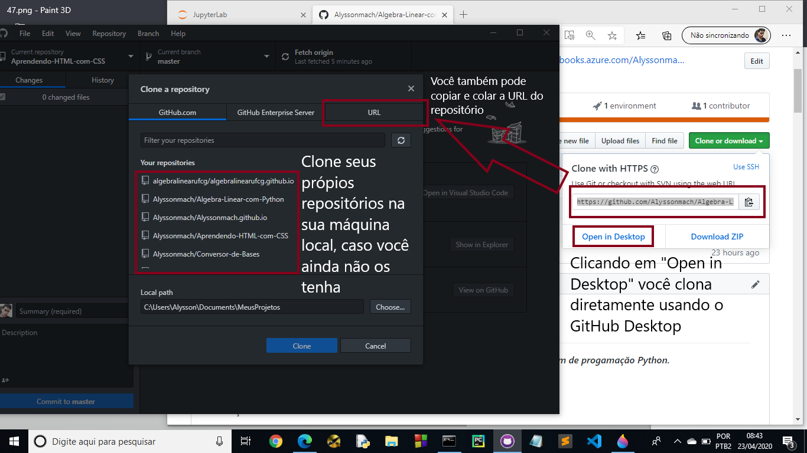
Usando o GitHub Desktop, você pode ter uma ferramenta poderosa em suas mãos para fazer a ligação entre o repositório remoto e o local. Além disso, não esqueça que você pode alterar os arquivos tanto pela pasta original que eles estão armazenando localmente ou abrindo pelo Visual Studio Code usando o GitHub Desktop.
As mudanças feitas na pasta local são detectadas pelo Git. Você pode revisá-las, registrá-las em commits e enviá-las ao repositório remoto, se tiver permissão.
Respeite a autoria e a licença dos projetos de outras pessoas. Ao reutilizar código, verifique os termos da licença e dê os créditos exigidos.
Próximos Passos...¶
Na próxima aula, vamos publicar um site estático com o GitHub Pages e conhecer os arquivos básicos usados para páginas web.
Está gostando do conteúdo? Compartilhe com seus amigos para que eles possam aprender também! Ajude a tornar a educação gratuita mais plural e democrática.
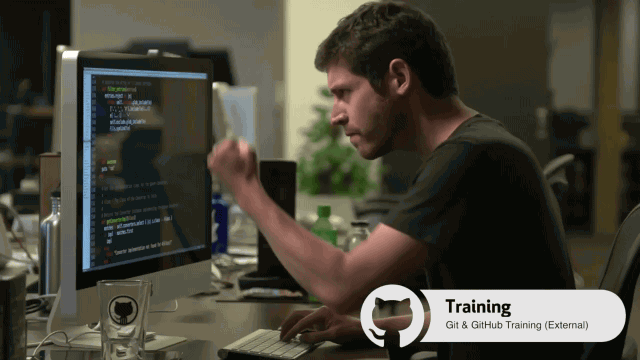